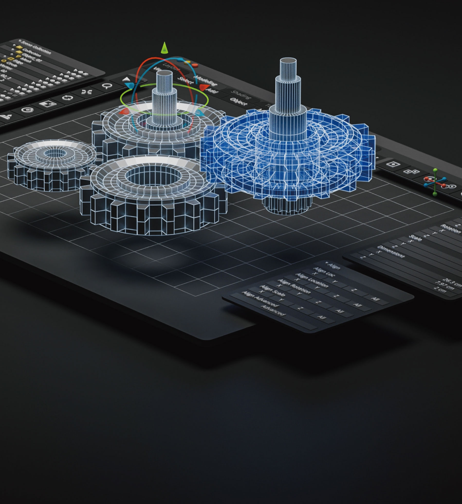

College Of Engineering • 공과대학

|
실무와 인성 중심의 실용 기계 공학 교육
|
|
기계공학부
SCHOOL OF MECHANICAL ENGINEERING
|
|
 me.ssu.ac.kr
me.ssu.ac.kr
|
 02-820-0650
02-820-0650
|
|
학과 설립
1969 년
|
입학 정원
98 명
|
교직과정 개설여부
o
x
|
전임교원
12 명
|
학과 소개
기계공학은 각 분야의 공학과 산업의 핵심 기반이 되는 학문이다. 숭실대학교
기계공학부는 전 산업의 기계 또는 기계 구조물을 설계하고, 제작하며, 설계하여
제작된 것을 유지·보수 및 관리를 위해 필요한 다양하고 심도 있는 전공지식과
현장경험을 갖춘 일류 기계공학 엔지니어를 양성하고 있다. 자동차 및 운송 기술,
마이크로 기술, 지능화 및 로봇 기술, 신에너지 기술, 바이오기술 등 다양한 분야에
기여하는 만큼, 졸업생들은 기계산업뿐 아니라 다양한 산업에 진출해 활약하고 있다.
학과 인재상
수학, 기초과학, 정보기술 및 공학지식의 이해를 통한 문제해결 및 창의적 응용 능력을 갖춘 인재
기계공학 전문지식, 실험실습 및 설계 교육에 의한 실무 및 가치창출 능력을 가진 인재
세계화 사회에서의 의사소통 능력, 공동체 의식 및 문화이해 소양을 갖춘 인재
주요 커리큘럼
물리 및 실험, 프로그래밍 및 실습, 정역학, 공학설계입문
기계요소설계, 제조공학, 동력시스템공학, 점성 및 압축성 유동, 기계진동학,
기전공학, 열전달, 자동제어
종합설계, 마이크로컨트롤러, 전산응용설계, 기계설비공학, 전산응용가공,
자동차공학, 에너지공학, 로봇공학
선택교과 가이드
일반선택
수학Ⅰ, 수학Ⅱ, 미적분, 확률과통계, 물리학Ⅰ, 화학Ⅰ
진로선택
기하, 물리학Ⅱ, 융합과학, 공학일반
동아리 및 소모임 소개
SSARA(자동차 연구회), 천금비(항공기 연구회)
학과 특색 프로그램
현장견학 프로그램 : 매년 3학년 학생들을 대상으로 국가 주요 산업기관 시찰 및
견학 프로그램
기계인의 밤 : 숭실대학교 기계인이 한자리에 모여 동문회 및 정보교환과 모교
기계공학부의 발전과 단합을 추구하는 대화의 자리
우수 학생 및 학과 성과
로봇경진대회 우수상 수상, 전국 대학생 자작모형항공기 대회 2위 수상, KSAE For-mula 장려상 수상, PAMS E-formula 준우승 수상
취득 가능 자격증
일반기계기사(한국산업인력공단), 건설기계기사(한국산업인력공단),
산업기계설비기능사(한국산업인력공단), 기계설계산업기사(한국산업인력공단)
졸업 후 진로
중공업 분야(현대중공업, 포항제철, 대한항공 등), 자동차 분야(현대자동차,
쌍용자동차 등), 전자 분야(삼성전자, LG전자 등), 에너지 분야(한국전력공사, 서부발전 등),
건설·플랜트분야(GS건설, SK건설등)
기계설비, 에너지시스템, 유체역학, 자동차공학, 고체역학, CAD/CAM(Comput-er-Aided Design/Manufacturing), 생산공학,
자동제어, 진동, 지능 기전 시스템, 지능로봇시스템, 나노복합소재, 머신러닝
Q 인문계 고등학교에서 현실적으로 기계와 관련한 교과 및 비교과 활동 등을
하기 어렵다는 문제가 있습니다. 이런 경우는 어떻게 해야 하나요?
A
기계공학부라고 해서 반드시 기계와 관련한 활동을 해야 하는 것은 아닙니다.
전공 공부를 위해서는 오히려 수학 교과나 물리 교과 등 과학 분야에 대한 지식 등이
더 필요합니다. 따라서 수학 교과, 물리 교과 등의 성적 관리를 열심히 하면 좋
좋습니다. 비교과 활동에 있어서도 반드시 ‘기계’와 관련한 활동만을 해야 하는 것이
아니라 수학 및 과학 관련한 활동을 한다면 도움이 될 것입니다.